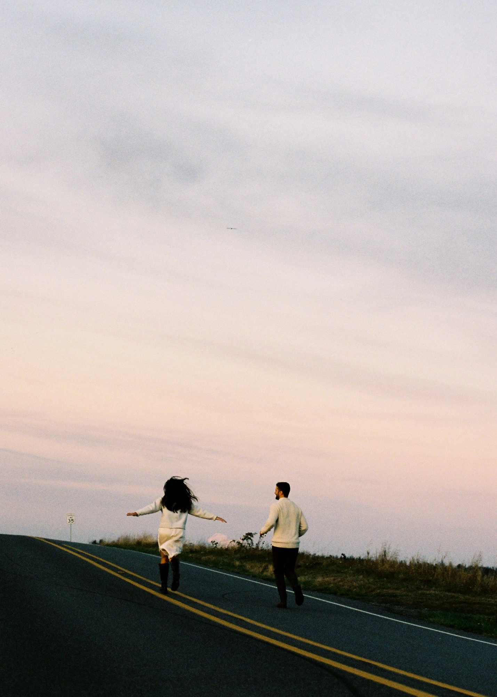

The Corson Building
5609 Corson Ave S, Seattle, WA 98108
By public transit
From downtown: King County Metro Route 124 (southbound on 3rd Ave) to Georgetown, then a short walk.
From the airport (SEA): Link light rail 1 Line to Tukwila International Blvd, then Route 124 northbound to Georgetown.
Plan your trip with the Metro Trip Planner.
